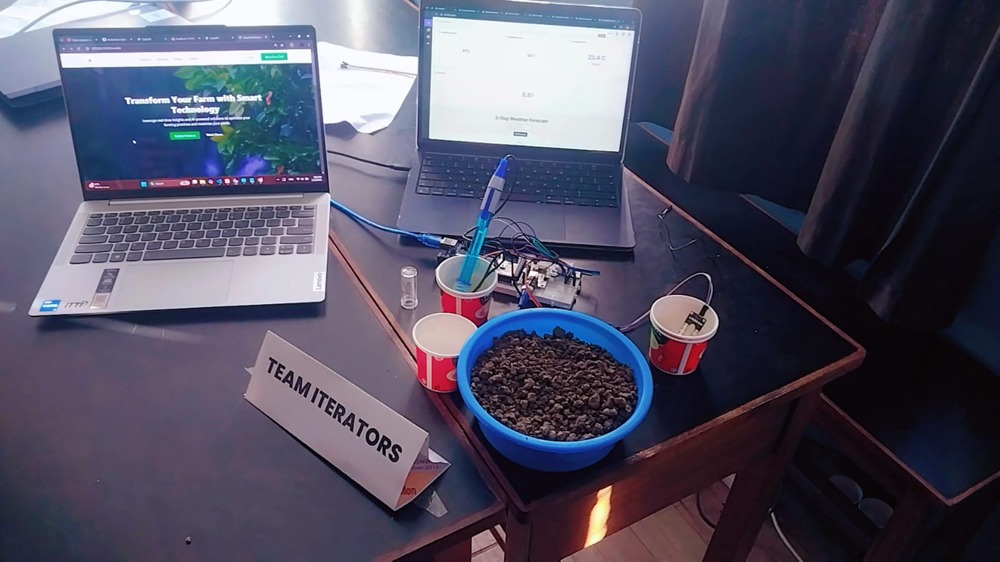

SmartFarming: An End-to-End Pipeline from Sensor to Dashboard to Recommendation
An ESP32 sensor node, a PHP/MySQL ingestion layer, a Flask-served rooftop dashboard, and a weighted k-NN crop recommender — four separately built pieces that had to agree on one thing: what a farmer actually needs to see.

The actual demo setup at Noskathon: a potted soil sample wired to the DHT11/ESP32 sensor node on the right, with the live dashboard and landing page running on the two laptops.
Overview
SmartFarming set out to answer a deceptively simple question: what does a farmer actually want to look at? Not raw sensor voltages, and not a black-box AI verdict either — something in between. The system ended up as three connected layers built by the team at different points in the hackathon: a DHT11-based ESP32 node that reports temperature and humidity over Wi-Fi, a PHP/MySQL ingestion endpoint and a parallel Flask dashboard that render that data as something readable, and a k-nearest-neighbors crop recommender that turns soil and climate numbers into a ranked, confidence-scored suggestion of what to plant. None of these three pieces started out designed to fit together — they were built to solve separate parts of the same farming problem — which is exactly what made integrating them instructive.
The demo rig, shown above, was deliberately makeshift: a handful of soil in a plastic bowl standing in for a plot of farmland, with the DHT11 sensor and ESP32 taped together and wired straight into a breadboard rather than housed in any enclosure. Repurposed plastic cups held secondary probes during testing. None of that mattered for what the judges needed to see — the live dashboard on one laptop and the landing page on the other were pulling real numbers off that sensor in real time, which was the actual point of the demo.
System Architecture
1. Sensor Layer — ESP32 + DHT11
An ESP32 microcontroller reads temperature and humidity and posts them as a simple URL-encoded HTTP request to a PHP endpoint every loop cycle. The firmware keeps deliberately little logic on-device: it checks its own Wi-Fi connection state and reconnects if dropped, then fires a POST with the two readings as form fields. Almost all of the interesting behavior — validation, storage, and interpretation — was pushed off the microcontroller and onto the server, which kept the embedded code small enough to debug quickly under hackathon time pressure.
2. Ingestion Layer — PHP + MySQL
The receiving endpoint (testdata.php) is intentionally minimal: it opens a MySQLi connection, reads the posted temperature and humidity fields, and inserts them as a new row in a dht11 table. There's no batching and no queue — each ESP32 request is a single synchronous insert — which is a reasonable trade for a single sensor node reporting at a slow, human-relevant cadence, though it's the first thing that would need to change if the system had to support many concurrent sensor nodes.
3. Presentation Layer — Flask Dashboard
A second, independently-built dashboard reads from a related MySQL table (sensor_data, covering moisture, pH, humidity, and temperature) and renders the most recent reading through a Flask route into a styled HTML template with circular gauges and a live temperature card. This dashboard also embeds a client-side call to the OpenWeatherMap forecast API, so a farmer sees both what their own sensors are reporting right now and what the next five days of weather are likely to bring — with a small rule-based advisory ("expect heavy rain — check drainage," "high average temperature — ensure adequate watering") generated from thresholds on rainfall, temperature, and wind speed in the forecast data.
4. Recommendation Layer — Weighted k-NN Crop Advisor
Separately from the live sensor path, a scikit-learn NearestNeighbors model trained on the standard Kaggle Crop Recommendation dataset (N, P, K, temperature, humidity, pH, rainfall → crop label) takes either manually entered or sensor-derived values and returns a ranked list of suitable crops. Rather than a plain majority vote among the nearest neighbors, each neighbor's vote is weighted by an inverse-distance score computed only over the input features that fall within a sane range for the dataset — so a slightly out-of-range pH reading doesn't get to dominate the vote the way it would in an unweighted scheme.
Technical Challenges Overcome
- Treating "out of range" as a first-class input, not an error: Early testing showed that a single wildly-off sensor reading (a miscalibrated pH probe, for instance) could dominate a naive nearest-neighbor vote and produce a nonsensical crop suggestion. The fix was to compute a per-feature valid range from the training data itself and simply exclude out-of-range features from the confidence and distance calculations, rather than either rejecting the whole request or letting a bad reading silently poison the result.
- Two dashboards, two schemas: Because the PHP ingestion path and the Flask dashboard were built somewhat independently, they ended up pointed at different table shapes (
dht11vs.sensor_data). Reconciling this after the fact — rather than redesigning one schema mid-build — meant explicitly deciding which table was the sensor system-of-record and which was a presentation-only read model, a distinction that isn't obvious until you have two consumers disagreeing about where the "real" data lives. - Confidence scoring that means something to a non-technical user: An early version of the recommender just returned the plain k-NN vote count, which doesn't mean anything to a farmer deciding whether to trust a suggestion. Recomputing a 0–100% confidence score from the fraction of matching, in-range features per neighbor gave the output a number that maps onto an intuitive "how sure is this?" question instead of an opaque vote tally.
- Debugging a headless ESP32 over Wi-Fi: With no display on the sensor node, diagnosing connection drops meant relying entirely on serial logs and the payload/HTTP-code print statements in the firmware loop. Keeping those diagnostic prints in the shipped firmware (rather than stripping them for a "clean" build) turned out to be the single most useful debugging tool during integration testing with a live Wi-Fi network.
Key Code / Hardware Components
The weighting step in the recommender is the piece that does the most work for the least code — it's what separates this from a stock k-NN classifier:
valid_distances = [dist_dict[f] for f in valid_features]
avg_valid_distance = np.mean(valid_distances) if valid_distances else float('inf')
weight = 1 / (avg_valid_distance + 1e-6)
# later: confidence from the fraction of closely-matching, valid features
matching_features = sum(1 for f in valid_features if dist_dict[f] < 0.2)
confidence = (matching_features / len(valid_features)) * 100On the hardware side, the sensor node is a single ESP32 DevKit paired with a DHT11 temperature/humidity sensor, posting over the built-in Wi-Fi radio directly to a LAN-hosted PHP endpoint — no gateway device or edge compute needed for a single-node deployment. The dashboard stack is plain Flask with server-rendered Jinja templates rather than a JS framework, which was a deliberate choice to keep the presentation layer simple enough for the whole team to edit under time pressure.
Key Takeaways
The most durable lesson from SmartFarming wasn't about IoT or machine learning specifically — it was that a system built as three or four independently-developed pieces needs an explicit integration pass, not an implicit one. Each layer (firmware, ingestion, dashboard, model) worked correctly in isolation well before the team noticed the schema mismatch between the PHP and Flask paths, precisely because nothing forced the pieces to talk to each other until integration testing. It also reinforced a specific idea about applying ML to noisy real-world sensor data: a model's confidence output is only as trustworthy as its handling of out-of-range inputs, and deciding what to do with a bad reading is a design decision, not a detail to patch in later.